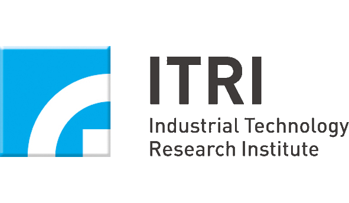
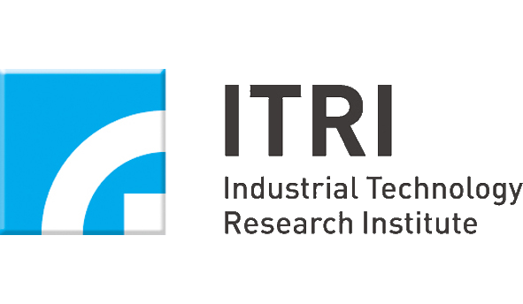

-
Academic Session: Conduct Research in Government, Academia, and NPO
Session Chair: Dr. Ing-Kang Ho 何英剛
Member of Academia Sinica, Academia Sinica
-
Dr. Wun-Ju Shieh 謝文儒
Recent Challenges of Emerging and Reemerging Infectious Diseases
The control and prevention of infectious disease remains a fundamental part of public health programs throughout the world. The modern medicine has been challenged by a series of emerging and reemerging infections in the past three decades. These infections include legionnaires' disease, Lyme disease, toxic shock syndrome, AIDS and associated opportunistic infections, SARS, avian influenza, and several viral hemorrhagic fever such as Ebola, Marburg, Lassa, etc. These diseases have occurred following a false sense of victory over infectious diseases on a global scale due to effective vaccinations and antibiotic agents against certain microorganisms. However, except for smallpox, infectious diseases are by no means vanquished; and the surge of many emerging and reemerging infections are good examples. These new epidemics are caused by alterations of interplay between microorganisms and human hosts, and are also affected by natural environmental factors, such as climatic or ecological changes. The evolutionary or genetic changes in existing organisms or newly recognized organisms are basically modalities of microbial adaptation to the environmental pressures, which are frequently created by human behavioral, social, economic, and cultural activities. Some of these activities include population overgrowth, mass migration, geopolitical conditions, agriculture and forestry mismanagement, rapid and increasing international transportation, misuse of antibiotic agents, and changing patterns of human exposure to animals. Because of the unique circumstances of the modern world, these new infectious diseases are emerging at much faster rates than before, and old ones are returning with bolstering strength. These infections have posed severe threats to global public health and have raised serious questions regarding the capability of modern medicine to face their challenges. The problem is further amplified by a generally lenient, and sometimes ignorant attitude toward infectious diseases by policymakers, healthcare professionals, and general public. Such attitude has been partially responsible for serious deficiency in diagnostic capabilities, research facilities, surveillance systems, and control and prevention programs. Therefore, it is crucial to understand the dynamics and impact of these emerging and reemerging infectious diseases.
Medical Officer, Centers for Disease Control and Prevention (CDC)
- Investigation of outbreaks of major infectious diseases
- Performed high-risk autopsy in multiple field investigations
-
 Dr. Ya-Chieh Hsu 許雅捷
Dr. Ya-Chieh Hsu 許雅捷A Family Business: Interactions between Stem Cells and Progeny in the Hair Follicle Niche
Adult stem cells (SCs) reside in specialized anatomical locations, known as the niches, where they are used sparingly, often remaining quiescent for a long time. The activity of SCs is under tight regulation. Aberrant SC activity results in severe consequences. For example, in the skin, tumors including squamous cell carcinoma and basal cell carcinoma are derived from SC hyper-proliferation. In contrast, androgenetic alopecia, or male pattern baldness, is due to a problem in HFSC activation. Delineating the regulation of SC activity becomes critical for studying tissue biology under physiological (development and homeostasis) and pathological (injury, degeneration, and cancer) conditions.
The SC niche plays a dominant role in regulating SC activity. Understanding the niche composition and the exact functional signals expressed by the niche components is an important aspect of SC biology. The murine HF is an ideal system to study the interactions between SCs and their niche. Hair follicle stem cells (HFSCs) are located in a permanent protrusion of the HF, known as the bulge. HFs undergo periodic phases of growth (anagen), destruction (catagen), and rest (telogen) throughout the life of the animal, known as the hair cycle. The HFSCs are activated only transiently in the initial phase of the anagen, and remain quiescent throughout the other hair cycle stages.
We are among the pioneers to identify stem cell progeny as important regulators of their stem cell parents. Currently, we are elucidating specific signalling molecules governing these feedback regulations.
Assistant Professor, Department of Stem Cell and Regenerative Biology, Harvard University
- Postdoctoral research at the Rockefeller University
- PhD at Baylor College of Medicine
- Research interest: developmental biology
-
-
Dr. Kai Wang 王愷
What Did We Learn from Characterizing Circulating Nucleic Acids
Blood is a rich source of different types of biomolecules, and is the most common sample used in disease diagnosis and biomarker discovery. However, blood-based biomarker discovery suffered with enormous signal-to-noise ratio between samples from normal and diseased individuals. The noise can in part be attributed to the combination of 1) the large variation among “healthy” individuals, 2) different pathobiologic stages of the disease, and 3) the inadvertent grouping of different diseases with similar clinical presentation, but much of the noise arises are related to technical issues. Recent discovery of circulating cell free nucleic acids, including circulating tumor DNA (ctDNA) and cell free RNA (cfRNA), opens up an opportunity to use circulating nucleic acids to assist the detection of various physiopathological conditions. I will share our experience and discuss some of the challenges in characterizing circulating nucleic acids.
Principal Research Scientist, Institution for System Biology
- Co-founder and President, PhenoGenomics Corporation
- Board Director, LifeSpan Bioscience
- Acting Assistant Professor, University of Washingto
-
Academic Panel Discussion
Panelists: Ing-Kang Ho, Wun-Ju Shieh, Ya-Chieh Hsu, Dai Wang 何英剛、謝文儒、許雅捷、王愷
Moderator: Shelly Hsiao-Ying Cheng 鄭筱盈
Have QUESTIONS in mind? Submit a request and I will ask them for you.
-
Luncheon and Keynote Address
-
Dr. Weng-Foung Huang 黃文鴻
Biomedical Industry and Taiwan’s National Health Insurance
Taiwan launched a single-payer National Health Insurance program on March 1, 1995. As of 2014, 99.9% of Taiwan’s population was enrolled. The database of this program contains registration files and original claim data for reimbursement. Large computerized databases derived from this system by the National Health Insurance Administration (NHIA), Ministry of Health and Welfare (MOHW) and maintained by the National Health Research Institutes (NHRI) are provided to scientists in Taiwan for research purposes.
Data in the National Health Insurance Research Database (NHIRD) that could be used to identify patients or care providers, including medical institutions and physicians, is scrambled before being sent to the NHRI for database construction and is further scrambled before being released to each researcher. Based on the registration files and original claims data in NHIRD, specific data subsets are constructed for research purposes including Registration Dataset, Systematic Sampling of 0.2% ambulatory care expenditures by visit (CD) and 5% of the inpatient expenditures by admission (DD), Longitudinal Health Insurance Database(LHID) of 2000, 2005,and 2010, and Specific subject datasets such as Cancer dataset (CN), Case-payment dataset (NCP) Diabetes dataset (DB) Psychiatric Inpatient Medical Claim Dataset (PIMC), etc.
The NHIRD has been a very beneficial research resource not only in its national representative samples, but also in the real world experiences to explore the potential problems of drug safety. This presentation starts with using NHIRD for Cross-sectional studies in drug utilization patterns such as patterns of sleep-related drugs, overdose, duplicate medications, drug interactions, etc... Longitudinal cohort studies including COX-2 inhibitors and CV events, thiazolidinediones and CV events, osteoporosis treatment and atrial fibrillation, psychotropic agents and dementia, etc. will also be presented.
Though NHIRD in drug safety research has its limitation, it does provide a very effective evidences that was generated on the basis of empirical experiences of drug use Taiwan and to assure the public concerns of drug safety issues in Taiwan.
Professor and Director, National Yang-Ming University
- 台灣行政院衛生署藥物食品檢驗局局長
- 中華民國生物產業發展協會監事
- 台灣藥學會理事長
-
Industrial Session: Beyond the Bench
Session Chair: Andy Hu 胡紹崇
President, Globe Medical Tech, Inc.
-
Dr. Shih-En Chang 張施恩
Overview of Drug Development and Potential Job Opportunities for Young Professionals from Biomedical Background
Medical Science Liaisonand and Key Account Manager, Profil Institute for Clinical Research
- Postdoctoral research at the Scripps Research Institute
- PhD at Baylor College of Medicine
-
Dr. Daisy Dai 戴秀芳
Transition from Academic Research to Medical Science Liaison
Medical Science Liaison, inVentiv Health / Pierre Fabre Pharmaceuticals, Inc.
- Clinical Development & Regulatory Affairs (Intern), ARCA biopharma, Inc.
- Postdoctoral Research at University of Colorado
- PhD at Baylor College of Medicine
-
-
Dr. Weng-Foung Huang 黃文鴻
NHI Research Database and Drug Safety Research
Professor and Director, National Yang-Ming University
- 台灣行政院衛生署藥物食品檢驗局局長
- 中華民國生物產業發展協會監事
- 台灣藥學會理事長
-
Industrial Panel Discussion
Panelists: Andy Hu, Shih-En Chang, Daisy Dai, and Weng-Foung Huang 胡紹崇、張施恩、戴秀芳、黃文鴻
Moderator: Chih-Chun Lin 林致均
Have QUESTIONS in mind? Submit a request and I will ask them for you.
Sponsors
 
